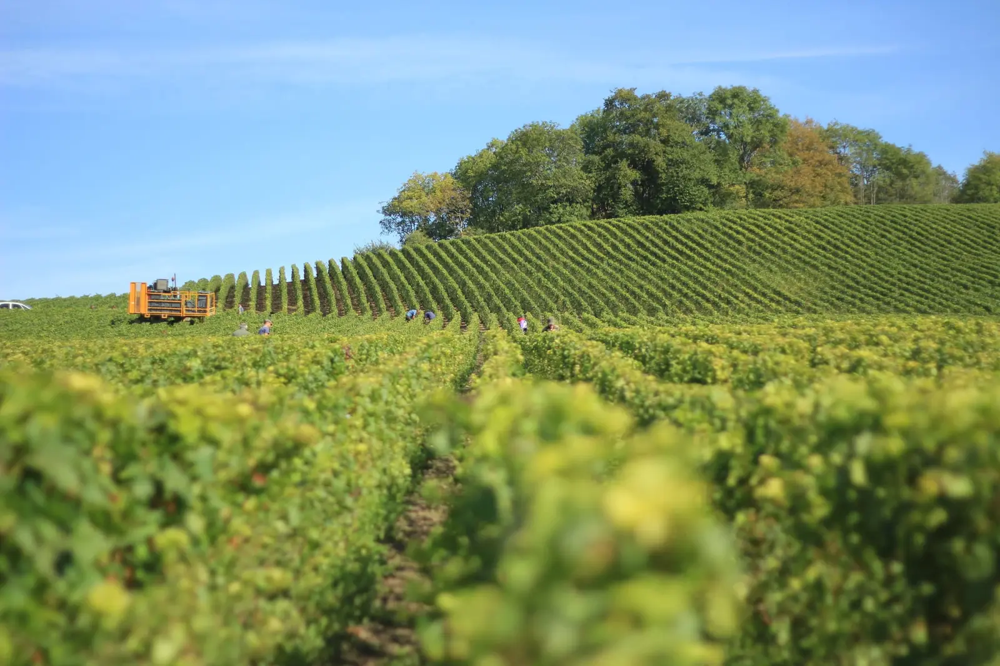

Agriculture de conservation
Couverts végétaux entre les rangs et travail du sol limité : la terre reste vivante, garde son eau et sa structure.
Le domaine
Depuis plusieurs générations
Héritier de plusieurs générations de vignerons à Montlouis, Vincent Denis reprend en 1999 l'exploitation de ses grands-parents et de ses parents.
Comme son père, il mène une double activité : 32 hectares de vignes et 80 hectares de céréales — blé, orge, sorgho, millet, colza, sarrasin. Une vision d'agriculteur autant que de vigneron.

Repères
Vincent reprend l'exploitation familiale.
Certification Terra Vitis : une viticulture raisonnée, contrôlée chaque année.
Label Au Cœur des Sols et naissance des cuvées Coulées Douces.
32 hectares de vignes, dont 5 vinifiés au domaine parcelle par parcelle.
Notre philosophie
Couverts végétaux entre les rangs et travail du sol limité : la terre reste vivante, garde son eau et sa structure.
Depuis 2009 : une viticulture raisonnée, respectueuse de l'environnement et des personnes, contrôlée chaque année.
Depuis 2020 : un label qui reconnaît les agriculteurs engagés pour la santé et la fertilité des sols.